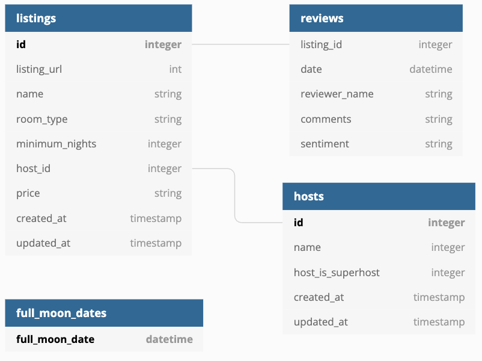

Lectures in this section
- What dbt is and what it does not do ~3:00 Course introduction
- Analytics engineering as a job ~3:00 Course introduction
- How the course is structured and what you build ~2:00 README.md · course repo
The course opens short. Sections 2–5 are theory, Section 6 gets you running, and from Section 7 onwards every lecture adds something real to the Airbnb project.
What dbt is
dbt is a build tool for SQL. You write SELECT statements in files; dbt works out what depends on what, wraps each one in the right CREATE statement, runs them against your warehouse in the correct order, and tests the results.
That is the whole idea. Everything else in this course — materializations, tests, snapshots, macros, documentation, deployment — is built on top of two facts: a model is a SELECT, and dbt knows the order to run them in.
The name is short for data build tool, and the comparison is deliberate. Make takes a folder of C files and a description of what depends on what, and produces a binary. dbt takes a folder of SQL files, infers what depends on what by reading the code, and produces a set of tables and views in your warehouse. In both cases you describe the what, and the tool handles the ordering, the rebuilds and the failure handling.
What dbt does not do
This trips people up more than anything else in the first week. dbt does not move data. It has no connectors, no extractors, no loaders. It never sees your rows — it sends SQL to your warehouse and reads back status, nothing more. If the data is not already in the warehouse, dbt cannot help you get it there.
| dbt does | dbt does not |
|---|---|
| Compile Jinja and SQL into warehouse-native SQL | Extract data from APIs, databases or files |
Work out build order from your ref() calls | Load data into the warehouse |
| Create and refresh tables, views and incremental models | Process data itself — the warehouse does all the compute |
| Run tests and stop dependent models when they fail | Schedule itself — you need cron, an orchestrator or dbt Cloud |
| Generate documentation and a lineage graph | Provide dashboards or a BI layer |
| Snapshot how a mutable table changed over time | Stream, or do anything sub-minute |
Where dbt sits in a pipeline
Extract and load are somebody else's problem — Fivetran, Airbyte, a Python script, a Snowpipe. Once the raw data has landed, dbt owns everything from there to the tables your dashboards read.
dbt owns the T in ELT, and nothing else
What a model looks like
Here is a real model from the project you will build. It is a SELECT and nothing else — no CREATE TABLE, no DROP, no transaction handling.
WITH raw_listings AS (
SELECT
*
FROM
AIRBNB.RAW.RAW_LISTINGS
)
SELECT
id AS listing_id,
name AS listing_name,
listing_url,
room_type,
minimum_nights,
host_id,
price AS price_str,
created_at,
updated_at
FROM
raw_listingsAnd here is the model downstream of it. The only difference that matters is {{ ref('src_listings') }} where a table name would normally go.
WITH src_listings AS (
SELECT
*
FROM
{{ ref('src_listings') }}
)
SELECT
listing_id,
listing_name,
room_type,
CASE
WHEN minimum_nights = 0 THEN 1
ELSE minimum_nights
END AS minimum_nights,
host_id,
REPLACE(
price_str,
'$'
) :: NUMBER(
10,
2
) AS price,
created_at,
updated_at
FROM
src_listingsThat one function call does three jobs at once. It records a dependency, so dbt knows to build src_listings first. It resolves to a real, fully-qualified relation name at compile time, which differs between your development schema and production. And it feeds the lineage graph, so anyone can see what breaks if this model changes.
FROM AIRBNB.DEV.SRC_LISTINGS instead of {{ ref('src_listings') }} compiles and runs perfectly well — and quietly removes the model from the DAG. dbt will happily build them in the wrong order, and your dev run will read production data. This is the single most common beginner mistake.Analytics engineering
The job title appeared because a gap opened up. Data engineers know how to test, version and deploy software but do not know the business. Analysts know the business but were never given the tools to build anything maintainable. Analytics engineering is the middle: people who model data for a living, using software engineering practice to do it.
Data engineer
Moves and stores data reliably. Owns ingestion, infrastructure, orchestration and the warehouse itself. Thinks in pipelines and uptime.
Analytics engineer
Turns raw tables into trustworthy, documented, tested datasets that mean something to the business. Thinks in models and definitions.
Data analyst
Answers questions with those datasets. Builds dashboards, runs analyses, works with stakeholders. Thinks in questions and decisions.
What the practice actually means
Before dbt, the transformation layer was typically a folder of .sql files that someone ran by hand, a set of stored procedures nobody dared change, or a chain of scheduled queries in the warehouse UI. None of it was version controlled, none of it was tested, and the only documentation was whoever had been there longest.
Analytics engineering applies the practices software teams settled on decades ago:
- Version control — the transformation logic is code in git, reviewed in pull requests, with a history you can bisect when a number changes.
- Modularity — a piece of logic is defined once and referenced everywhere, instead of the same
CASEstatement being copy-pasted into eleven dashboards with three variations. - Testing — assumptions about the data are written down and checked on every run, so a broken upstream feed fails loudly instead of silently changing a KPI.
- Environments — you develop against your own schema, and the same code deploys to production without editing it.
- Documentation — descriptions live next to the code and are published automatically, so they are wrong less often.
- Continuous integration — a pull request builds and tests only what it changed before anyone approves it.
DRY, and why ref() makes it possible
“Don't repeat yourself” is easy to say and hard to do in SQL, because SQL has no import statement. A CTE is scoped to one query. A view is shared but opaque and unversioned. dbt's answer is that every model is importable by every other model, which means the definition of a cleansed listing can exist exactly once and be reused by everything downstream.
That is why the course spends so long on the staging layer. src_listings does almost nothing — it renames a few columns. But it means that if the raw table's name column is ever renamed upstream, exactly one file changes.
How dbt actually runs
Understanding the two phases — parse then execute — explains most of dbt's behaviour, including several things that look like bugs when you first meet them.
What happens between dbt run and your warehouse
build the DAG
into target/
in DAG order
Phase one: parse
dbt reads every file in the project and renders just enough Jinja to find the ref(), source() and config() calls. From those it builds the dependency graph and writes it to target/manifest.json. Nothing has touched the warehouse yet.
This is why a typo in a ref() fails instantly with Model depends on a node named X which was not found, before any SQL runs. It is also why macros that query the warehouse need an {% if execute %} guard — during parsing there is no connection to query, so the macro has to do nothing on the first pass. That guard confuses everyone the first time they hit it, and it falls straight out of the two-phase design.
Phase two: compile and execute
dbt now renders each model's Jinja fully, producing plain SQL, and writes it to target/compiled/. It wraps that SQL in the DDL its materialization calls for, writes that to target/run/, and sends it to the warehouse. Independent models go in parallel, up to your threads setting; anything downstream waits for its parents.
target/compiled/ is the first place to look when a model misbehaves. It holds the exact SQL dbt produced, with every macro expanded and every ref() resolved. You can paste it straight into a warehouse worksheet and debug it as ordinary SQL. Most “dbt problems” turn out to be ordinary SQL problems the moment you read the compiled file.Here is what the second model above compiles down to. Notice that ref() has become a real relation name, and that the environment is baked in:
WITH src_listings AS (
SELECT
*
FROM
AIRBNB.DEV.src_listings
)
SELECT
listing_id,
listing_name,
room_type,
CASE
WHEN minimum_nights = 0 THEN 1
ELSE minimum_nights
END AS minimum_nights,
host_id,
REPLACE(price_str, '$') :: NUMBER(10, 2) AS price,
created_at,
updated_at
FROM
src_listingsWhat a run looks like
You will see this output several hundred times over the course, so it is worth reading properly once. Each model gets a START line and a finishing line carrying its status, its row count or size where the warehouse reports one, and its duration.
dbt run
dbt run 14:22:01 Running with dbt=1.11.12 14:22:01 Registered adapter: snowflake=1.11.6 14:22:02 Found 6 models, 3 sources, 2 snapshots, 12 data tests, 1 seed 14:22:02 Concurrency: 4 threads (target='dev') 14:22:03 1 of 4 START sql view model DEV.dim_listings_cleansed ......... [RUN] 14:22:03 2 of 4 START sql table model DEV.dim_hosts_cleansed .......... [RUN] 14:22:05 1 of 4 OK created sql view model DEV.dim_listings_cleansed .... [SUCCESS 1 in 1.84s] 14:22:07 2 of 4 OK created sql table model DEV.dim_hosts_cleansed ..... [SUCCESS 1 in 3.42s] 14:22:07 3 of 4 START sql incremental model DEV.fct_reviews ........... [RUN] 14:22:12 3 of 4 OK created sql incremental model DEV.fct_reviews ...... [SUCCESS 1 in 5.11s] 14:22:12 4 of 4 START sql table model DEV.dim_listings_w_hosts ........ [RUN] 14:22:16 4 of 4 OK created sql table model DEV.dim_listings_w_hosts ... [SUCCESS 1 in 3.98s] 14:22:16 Finished running 3 table models, 1 view model in 14.32s. 14:22:16 Completed successfully 14:22:16 Done. PASS=4 WARN=0 ERROR=0 SKIP=0 TOTAL=4
Two details in there matter later. Concurrency: 4 threads is how many models dbt will build at once, set in profiles.yml. And the numbering — 1 of 4, 2 of 4 — counts only the nodes selected for this run, which is why the count changes when you add --select.
dbt Core, dbt Cloud and Fusion
The course uses dbt Core, driven from the command line, because that is the version that teaches you what is happening. It is worth knowing what the alternatives are before you meet them in a job advert.
| dbt Core | dbt Cloud | Fusion engine | |
|---|---|---|---|
| What it is | Open-source Python CLI | Hosted platform around Core | A rewritten engine in Rust |
| Cost | Free | Free tier, then per developer seat | Free for smaller teams, licensed above that |
| Runs your project | On your machine or your infrastructure | On dbt Labs' infrastructure | Either — it replaces the engine, not the workflow |
| Scheduling | Bring your own: cron, Airflow, Dagster | Built in, with alerting and logs | Unchanged |
| Development | Your editor, plus an extension | Browser IDE, or your editor | Your editor, with a much better language server |
| Notable extras | Everything in this course | Semantic Layer, job orchestration, CI, access control | Understands SQL properly: catches column-level errors before the warehouse does |
Fusion is the interesting one for the next few years. dbt Core parses Jinja and treats the SQL inside as an opaque string — it has no idea whether SELECT customre_id is valid until the warehouse rejects it. Fusion actually parses the SQL for your dialect, which means it can tell you a column does not exist, work out column-level lineage, and compile large projects in a fraction of the time. Section 20 covers installing and using it.
How the course is structured
Top-down: the theory that makes the design decisions make sense, then a single real project that every feature gets attached to, then the craft of running it in a company.
The Airbnb use case
One dataset carries the whole course. Three CSV files are loaded into a Snowflake database called AIRBNB, in a schema called RAW:
| Raw table | Holds | Interesting because |
|---|---|---|
raw_listings | Properties: id, name, room type, minimum nights, host id, price, timestamps | Price arrives as a string with a $ in it, and some listings claim a minimum of 0 nights. Both need cleaning, which is what gives the staging layer a job. |
raw_hosts | Hosts: id, name, superhost flag, timestamps | Some hosts have no name, so you meet NVL and the question of what a sensible default is. |
raw_reviews | Reviews: listing id, date, reviewer name, comment text, sentiment | The big one, and append-only, which makes it the natural candidate for an incremental model. |

raw_listings.host_id points at raw_hosts.id, and raw_reviews.listing_id points at raw_listings.id. This diagram is also the project's documentation homepage, added in Section 14.The running joke of the project is the analysis it builds towards: do people write angrier Airbnb reviews the day after a full moon? It is deliberately silly, but it forces a genuinely useful pattern — joining a fact table to a small reference dataset that arrives as a CSV rather than from the source system, which is exactly what seeds are for.
What the finished project contains
- airbnb/
- dbt_project.yml project config, folder defaults, hooks, grants
- packages.yml dbt_utils, dbt_expectations
- selectors.yml named selection rules
- models/
- src/ 3 ephemeral staging models
- dim/ dimensions, including 2 versions and 3 Python models
- fct/ the incremental reviews fact
- mart/ the full-moon mart and its unit test
- schema.yml tests, descriptions, contracts, versions
- sources.yml the three raw tables plus freshness
- docs.md overview.md dashboards.yml
- macros/ logging, variables, schema naming, cleanup
- tests/ singular tests and 2 custom generic tests
- snapshots/ 2 YAML snapshots over the raw sources
- seeds/ 273 full moon dates, 2009 to 2030
- analyses/ the full-moon analysis query
- dbt_dagster_project/ orchestration, Section 18
git clone https://github.com/nordquant/complete-dbt-bootcamp-zero-to-hero.git — the main branch is the completed project, and _course_resources/course-resources.md is the instructor's own command-by-command script.Deeper detail and edge cases
Orientation material the course does not stop for: which dbt version introduced what, where the money goes, and the misconceptions that make the first fortnight harder than it needs to be.
Version notes
dbt moves quickly, and you will meet older projects. These notes teach dbt Core 1.11; here is what changed recently enough that a tutorial written two years ago will mislead you.
| Behaviour | Before | Now | Version |
|---|---|---|---|
| Snapshot definitions | {% snapshot %} blocks in .sql files | YAML files with relation: and config: | 1.9 |
| Deleted rows in snapshots | invalidate_hard_deletes: True | hard_deletes: invalidate (or new_record) | 1.9 |
| Tests in YAML | tests: | data_tests: (tests: still parses) | 1.8 |
| Generic test parameters | Passed as direct keys | Nested under an arguments: key | 1.10 |
| Unit tests | Not available | unit_tests: in YAML | 1.8 |
| Microbatch incremental strategy | Hand-rolled with variables | incremental_strategy='microbatch' | 1.9 |
| Dry runs | No equivalent | --empty | 1.8 |
| Sampling recent data | No equivalent | --sample, using event_time | 1.10 |
| Running a named selector | dbt run --selector name | dbt run -s selector:name | 1.12 |
| Model versions and deprecation | Convention only | versions:, latest_version:, deprecation_date: | 1.5 |
| Contracts and constraints | Not available | contract: {enforced: true} | 1.5 |
dbt --version prints the Core version and every installed adapter. A surprising share of “this does not work like the tutorial says” is a version gap, and dbt's own error messages rarely mention it.What it costs to run
dbt Core is free. The bill arrives from the warehouse, and it arrives in places that surprise people.
| What runs | Where the cost lands | How to spend less |
|---|---|---|
A table model | Full scan of its inputs plus a full write, every single run | Move to incremental once the rebuild is slow enough to notice |
A view model | Nothing at build time; the full query cost is paid by every consumer, every query | Materialise as a table anything a dashboard hits repeatedly |
| Tests | One query each. A unique test is a GROUP BY over the whole column | Test the grain on big tables, not every column; use where: to scope |
| Snapshots | A full scan of the source on every run to detect changes | Snapshot only what genuinely mutates, and run them less often than models |
--full-refresh | Rebuilds every incremental model from the beginning of time | Set full_refresh: false on models that must never be rebuilt casually |
dbt docs generate | Queries the information schema for every relation | Generate in CI, not in a loop while developing |
| Idle warehouse time | Snowflake bills a 60-second minimum each time a warehouse resumes | Set a short auto-suspend, and avoid trickles of tiny runs |
High threads | More concurrency can force a bigger warehouse or queue everything | Start at 4 and raise it only while watching the warehouse |
Traps that catch people
- Hard-coding a relation name — writing
FROM AIRBNB.DEV.SRC_LISTINGSworks, so nothing complains. But the model drops out of the DAG, gets built in the wrong order, and reads whatever schema you typed regardless of which target you are running. Alwaysref()orsource(). - Assuming dbt moves data — people arrive expecting connectors. dbt cannot read an API or a CSV on your laptop. Seeds are the only thing it loads, and they are for small static reference data, not ingestion.
- Editing the compiled SQL — files in
target/are output. Editing them changes nothing and is overwritten on the next run. Read them; never write them. - Expecting
dbt runto run tests — it does not.dbt runbuilds models only.dbt buildis the one that runs seeds, models, snapshots and tests together in dependency order, and stops a model's children when its tests fail. - Running dbt from the wrong directory — almost every dbt command must run from the folder containing
dbt_project.yml. In this course that meanscd airbnbfirst. The error you get otherwise — Could not run dbt: fatal: Not a dbt project — is clear, but it catches everyone at least once. - Committing
profiles.yml— it holds credentials and lives outside the project by default, in~/.dbt/, for exactly that reason. If you move it into the repo for convenience, it will end up on GitHub eventually. - Treating a view as free — views cost nothing to build, so people materialise everything as views and then wonder why the dashboard takes ninety seconds. The work did not disappear; it moved to whoever runs the query.
- Believing the DAG picture is the schedule — the lineage graph shows dependencies, not timing. dbt has no scheduler. Something outside dbt has to invoke it, which is what Section 18 is for.
- Assuming case-insensitivity — Snowflake folds unquoted identifiers to upper case, other warehouses do not, and dbt passes your text through. A model that works on Snowflake can break on BigQuery purely on capitalisation.
Troubleshooting playbook
| Symptom | Most likely cause | What to check / fix |
|---|---|---|
| Could not run dbt: fatal: Not a dbt project | Wrong working directory | cd to the folder holding dbt_project.yml |
| Model depends on a node named X which was not found | Typo in a ref(), or the model file is not under model-paths | dbt ls to list what dbt can actually see |
| Credentials in profile "airbnb", target "dev" invalid | Bad account identifier, key or role | dbt debug, which tests each part of the connection separately |
| Compilation Error ... unexpected end of template | An unclosed Jinja tag — usually a missing {% endif %} | The error names the file; check every block tag has its end |
| Model builds but has zero rows | A filter that is always false, or an incremental model whose watermark is ahead of the data | Run the file in target/compiled/ by hand in a worksheet |
| Changes to a model have no effect | Editing the compiled output, or a stale target/ | Confirm you are editing under models/; dbt clean |
| Runs are slow but the SQL is simple | threads: 1, or the warehouse resuming from suspended | Raise threads in profiles.yml; check warehouse auto-suspend |
404 Not Found from dbt deps | Package name or version does not exist | Check the exact version on the package hub; run dbt deps again |
Production patterns
Teams that get value from dbt quickly tend to make the same three decisions early. First, one project per warehouse rather than one per team — splitting too early means duplicating the staging layer and losing the lineage that made dbt worth adopting. dbt Mesh exists for when a single project genuinely outgrows one team, and that is much later than people expect.
Second, a naming convention applied from day one: src_ or stg_ for staging, dim_ and fct_ for the modelled layer, mart_ for what the business reads. The course uses exactly this, and it means the folder structure, the schema names and the DAG all tell the same story. Section 21 covers the full convention.
Third, production is a separate target from the beginning, not something bolted on later. Even a solo project benefits from developing into DBT_YOURNAME and deploying into PROD, because the alternative — everyone building into the same schema — is the failure mode that pushes teams back off dbt within a quarter.
The anti-pattern worth naming: a project where every model is a table and the whole thing is rebuilt nightly with dbt run --full-refresh. It works at ten models and falls over at two hundred, by which point the nightly job runs for six hours and nobody remembers which models actually needed rebuilding.
Certification pointers
Section 1 material appears on the exam as framing rather than as questions of its own, but two distinctions from here do get tested directly: what dbt does versus what the warehouse does, and the difference between dbt run and dbt build. Expect at least one question that hinges on build running tests and stopping downstream models on failure.
- Section 7 — because
ref(), the DAG and compiled SQL are the foundation every other exam topic builds on. - Section 8 — the four materializations and their trade-offs are the single most-tested subject in the exam.
- Section 22 — the eight topic areas, the question formats, and a full practice exam.
{{ ref('model_name') }} and the config keys, not merely recognise them. Type the code as you work through these notes rather than reading it.Interview questions
Answer each one out loud before opening it.
What does dbt actually do, and what does it leave to something else?Fundamentals
dbt owns the transformation layer inside a warehouse that already has the data. It compiles Jinja-templated SQL into warehouse-native SQL, infers a dependency graph from ref() and source() calls, wraps each model in the DDL its materialization requires, and executes them in order with configurable parallelism. It also runs tests, builds documentation and takes snapshots.
It leaves extraction and loading entirely to other tools, does no compute of its own, and has no scheduler. Every byte of processing happens in the warehouse, and something external — cron, Airflow, Dagster, dbt Cloud — has to invoke it.
Why is ref() better than writing the table name?Fundamentals
Three reasons, and the first is the one that matters. ref() is how dbt discovers dependencies, so a hard-coded name silently removes the model from the DAG: dbt no longer knows it has a parent and may build it before the table it reads exists.
Second, it resolves per environment. The same code compiles to AIRBNB.DBT_ZOLTAN.src_listings in development and AIRBNB.PROD.src_listings in production, with no branching in the model. Third, it feeds the lineage graph, so impact analysis and state-based selection both work.
Explain the difference between dbt run and dbt build.Comparison
dbt run builds models and nothing else. dbt build runs seeds, models, snapshots and tests interleaved in DAG order — so a model is built, then its tests run, and only if they pass do its children build.
That interleaving is the point. With dbt run followed by dbt test, a bad row propagates through the entire DAG before any test notices. With dbt build, the failure is contained at the first model whose test fails and everything downstream is skipped rather than silently poisoned. Production should use build.
Walk me through what happens between typing dbt run and a table appearing.Architecture
dbt parses every file in the project, rendering enough Jinja to find ref(), source() and config() calls, and builds the dependency graph. It writes that graph to target/manifest.json. Nothing has touched the warehouse yet, which is why a missing ref() fails immediately.
It then applies the selection criteria to pick the nodes to build, fully renders each one's Jinja into plain SQL in target/compiled/, wraps that in the DDL the materialization calls for and writes it to target/run/, and sends it over the connection. Independent models go in parallel up to the threads setting; children wait for parents. Results are written to target/run_results.json, which is what dbt retry later reads.
Someone says a dbt model is slow. Where do you start?Performance
Start by establishing that it is the SQL, because it almost always is — dbt itself contributes milliseconds. Open target/compiled/ for that model, run the SQL directly in a warehouse worksheet, and look at the query profile there.
From there the usual causes are: a table materialization rebuilding data that has not changed, in which case incremental is the answer; an accidental cross join or a join on a low-cardinality key; an ephemeral model being inlined into several children so the same work happens repeatedly; or the warehouse simply being undersized. Check whether the run is actually parallel too — threads: 1 in profiles.yml serialises everything and is an easy thing to miss.
What is analytics engineering, and how is it different from data engineering?Fundamentals
Data engineering owns getting data into the warehouse reliably: ingestion, infrastructure, orchestration, uptime. Analytics engineering owns what happens to it afterwards — turning raw tables into modelled, tested, documented datasets that carry agreed business definitions.
The distinguishing practice is that analytics engineers apply software discipline to work that used to be done ad hoc: the transformation logic is version controlled, reviewed, tested and deployed rather than pasted into a query editor. The role exists because that middle ground was previously owned by nobody, which is why so many organisations ended up with the same metric defined five different ways.
Your colleague says dbt gives you version control for data. Is that right?Gotcha
No — it gives version control for the transformation logic. Git holds the SQL that produces a table, not the table's contents. Checking out last month's commit and running it does not recreate last month's numbers, because the sources have moved on since.
The closest thing dbt offers to versioned data is a snapshot, which records how specific rows changed over time as a Type 2 slowly changing dimension. If you need the whole warehouse as of a point in time, that is a warehouse feature — Snowflake Time Travel, BigQuery time decorators, Delta or Iceberg table history — not a dbt one.
When would you not use dbt?Design
When the work is not set-based SQL transformation inside a warehouse. Streaming and anything with sub-minute latency requirements is the clearest case — dbt runs in batches and has no concept of a continuously updating result. Row-by-row procedural logic, or transformations that need a library the warehouse cannot run, fit badly too, although Python models close some of that gap.
It is also the wrong tool for ingestion, for reverse ETL, and for a team with no warehouse at all. And on a genuinely tiny project — three queries that one person runs monthly — the setup cost outweighs the benefit, though that situation tends not to stay tiny.
What is in the target/ directory and why does it matter?Troubleshooting
target/compiled/ holds each model's SQL with all Jinja rendered — the debugging tool you will reach for most. target/run/ holds the same SQL wrapped in its materialization's DDL, which is literally what was sent to the warehouse.
manifest.json is the full compiled graph: every node, its config, its dependencies and its documentation. It powers the docs site, state:modified comparisons and most dbt metadata tooling. run_results.json records the outcome and timing of every node in the last invocation, and is what dbt retry reads to know where to resume. catalog.json, written by dbt docs generate, holds column-level metadata queried from the warehouse.
The whole directory is generated output. It belongs in .gitignore, with one exception: production artifacts are deliberately published so that CI can compare against them, which is how Slim CI works.
Why do some macros need {% if execute %}?Jinja
Because dbt renders your project twice. During parsing it needs to find ref() and config() calls to build the graph, and at that point there is no guarantee of a usable warehouse connection or a complete graph. execute is False during that pass and True during the real run.
A macro that calls run_query() or reads graph.nodes without that guard will either error or return nothing useful at parse time. Wrapping the warehouse-touching part in {% if execute %} makes it a no-op on the first pass and do the real work on the second.
Hands-on practice
Nothing is installed yet, so this section is about getting oriented. Section 6 does the real setup.
-
Clone the course repository and find the three models shown on this page. Confirm for yourself that a dbt model really is just a
complete-dbt-bootcamp-zero-to-hero/airbnb/models/SELECT.You can open
src_listings.sql,dim_listings_cleansed.sqlandfct_reviews.sql, and none of them contains aCREATEstatement.Show solutionWalkthrough
- Clone the repo and look at the model folders.
- Note that
fct_reviews.sqldoes have aconfig()block — configuration is allowed, DDL is not.
git clone https://github.com/nordquant/complete-dbt-bootcamp-zero-to-hero.git cd complete-dbt-bootcamp-zero-to-hero/airbnb ls models/src models/dim models/fct grep -ri "create table" models/ # returns nothingUndo: nothing to undo — keep the clone, you will use it throughout.
-
Read the instructor's own lesson script end to end, skimming. It is the single most useful file in the repository and most students never open it.
_course_resources/course-resources.mdYou can name three things the course builds that you had not expected — for example the Preset dashboard exposure, the Dagster orchestration, or the three Python models.
Show solutionOrientation
- Open the file and read only the headings first, to get the shape.
- It runs from Snowflake setup through to the Power User and AI lessons, and every command the instructor types is in it.
- Keep it open in a tab while you work through the course; it is faster than scrubbing a video to find a command.
-
Draw the DAG for the three raw tables by hand, before the course tells you the answer. Decide which raw table you would make incremental and why.
Pen and paperA sketch with three sources, a staging model each, and a join. Your incremental candidate should be
raw_reviews.Show solutionModelling
Reviews is the right answer for three reasons: it is by far the largest table, it is append-only in normal operation, and it carries a natural event timestamp in
review_dateto filter on. Those three properties together are the standard test for whether a table should be incremental.Listings and hosts are both small and mutable — a listing's price changes in place. Small and mutable is the profile for a full rebuild, and if you need the history of those changes, that is what a snapshot is for rather than an incremental model. Section 10 does exactly that to both of them.
-
Find a transformation that already exists at your own workplace — a scheduled query, a stored procedure, a spreadsheet everyone depends on — and write down what would have to be true to express it as dbt models.
Your own stackA short list: where the raw data lands, what the intermediate steps are, and which assumptions in it nobody currently checks.
Show solutionDesign
The useful part of this exercise is the last item. Almost every existing transformation depends on unwritten assumptions — this column is never null, these are the only five statuses, one row per order. Those assumptions are exactly what become
not_null,accepted_valuesanduniquetests in Section 11, and writing them down is usually the moment people discover one of them has been false for months.
Recap
- dbt is a build tool for SQL: you write
SELECTstatements, it works out the order and wraps them in the right DDL. - It owns the T in ELT. It does not extract, does not load, does no compute of its own, and has no scheduler.
- All processing happens in your warehouse, and all cost lands there too.
ref()builds the DAG, resolves per environment, and feeds the lineage graph. Hard-coded table names silently break all three.- dbt runs in two phases: parse (build the graph, write
manifest.json) then compile and execute.{% if execute %}exists because of that split. target/compiled/holds the real SQL and is the first place to look when a model misbehaves.dbt runbuilds models;dbt buildruns seeds, models, snapshots and tests in DAG order and skips children when tests fail.- Analytics engineering is the practice of applying version control, testing, documentation and CI to the transformation layer.
- dbt Core is the free CLI; dbt Cloud is the hosted platform around it; Fusion is a Rust rewrite of the engine that understands SQL rather than treating it as text.
- The course builds one Airbnb project on Snowflake: three raw tables into staging, dimensions, an incremental fact, a seed, snapshots, a mart and a dashboard exposure.
- Every dbt command runs from the directory containing
dbt_project.yml. - These notes assume dbt Core 1.11; snapshots are YAML, tests live under
data_tests:, and generic test parameters nest underarguments:.